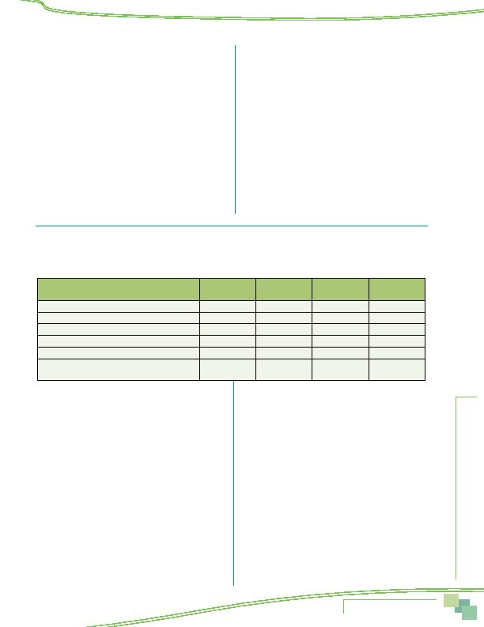

MWCOG-Comm
uter Conn
ecti
on
s-- 2010 State o
f th
e Comm
ute Report
9 9
107a How well do you think the operation of the
regional transportation system is managed?
Please use a scale of 1 to 5 where "1" means very
poorly managed and "5" means very well managed?
Very Poorly
Very well
Managed
Managed
(Don't Know)
Scale: 1 2 3 4 5
9
108 Do you have any recommendations for how the
transportation system in the region needs to
be improved?
DO NOT READ (ALLOW UP TO THREE
RESPONSES)
1 No improvements needed
2 Reduce traffic, congestion
3 More roads
4 More bus/train service, more transit
5 Expand Metrorail to more locations
6 Transit/Metrorail/buses too crowded
7 More bicycle lanes/paths
8 More parking at Metro stations
9 More parking other locations
10 More HOV lanes
11 Eliminate HOV lanes open HOV lanes to everyone
12 Expand the hours for HOV lanes
13 Build more toll facilities, convert existing roads to
toll roads
14 Reduce transit fares, Bus or Metrorail fares too high
15 Reduce parking fees, parking fees too high
16 Reduce fees on current or planned toll roads
17 Improve Metrorail safety
18 Improve bus safety
19 Clearer / bigger road signs
20 Roads need repair
21 Other _______________________
99 Don't know
109 I'm going to read you several possible ways the Washington region could spend its current transportation
dollars. For each, tell me if you think the region should allocate more, less, or about the same amount of
money on this item as it does now?
ROTATE AND READ
110 Finally, I'll read several possible ways to
increase transportation funding for the region.
Please rate your support for each using a scale of 1
to 5, where 1 means you "strongly oppose" it and 5
means you "strongly support" it as a way to increase
transportation funding. How much do you support...
Stongly
Strongly
Oppose
Support
(Don't Know)
Scale: 1 2 3 4 5
9
1 Increasing gas taxes
2 Automatically adjusting gas taxes based on inflation
3 Increasing transit fares
4 Instituting tolls to build new roads
5 Instituting tolls on existing roads
6 Increasing vehicle registration fees
7 Increasing vehicle sales taxes
8 Replacing the gas tax with a per mile charge on
vehicle miles driven
9 Increasing income taxes
10 Increasing property taxes
11. Increasing sales taxes
DEMOGRAPHICS
My last few questions are for classification purposes only.
113 In total, how many motor vehicles, in working
condition, including automobiles, trucks, vans,
and highway motorcycles are owned or leased by
members of your household?
_________
114 How many persons live in your home? Please
count yourself, family and friends, and anyone
who may be unrelated to you such as live-in
housekeepers or boarders.
_________ persons
88 Don't know
(SKIP TO INSTRUCTIONS BEFORE Q118)
99 Refuse
(SKIP TO INSTRUCTIONS BEFORE Q118)
IF Q114 = 1, AUTOCODE Q114a = 0, THEN SKIP TO
INSTRUCTIONS BEFORE Q118
Appendix--Survey Questionnaire
Service
Allocate More
1
Allocate Less
2
About Right
3
Don't know
4
1 Road maintenance
2 Maintenance for public transit, including Metro
3 Road expansion
4 Expansion of public transit
5 Expansion of pedestrian and bicycle facilities
6 Programs to support use of carpools, vanpools,
and public transit